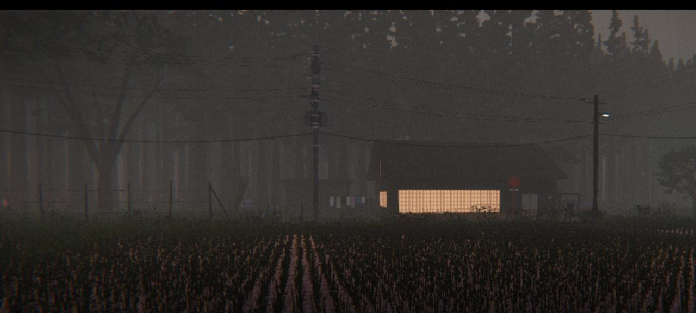
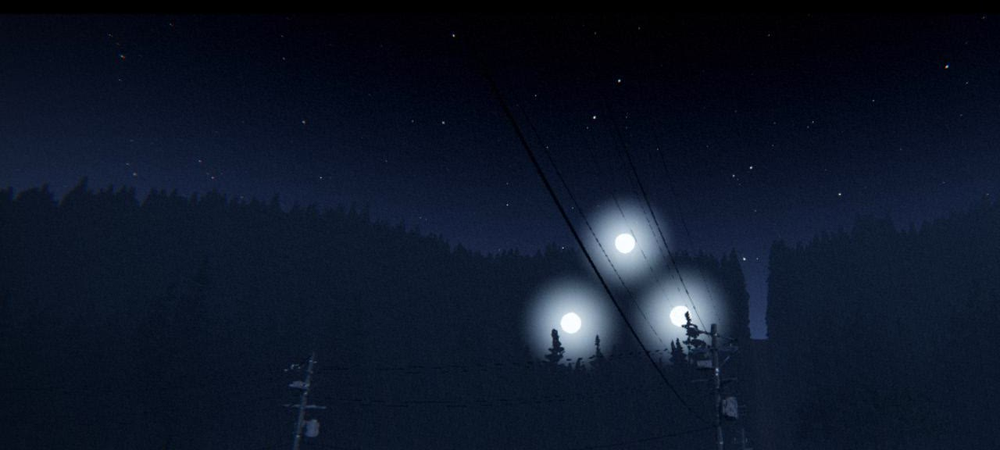
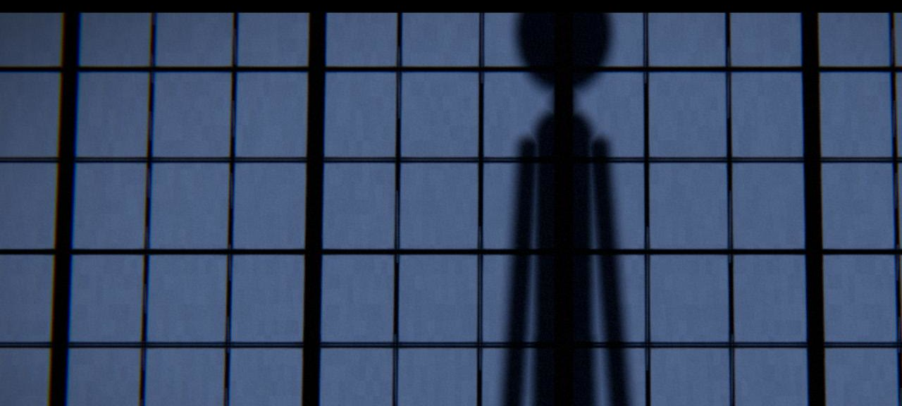
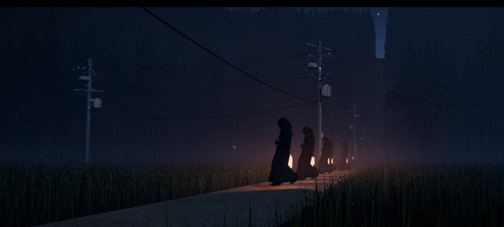
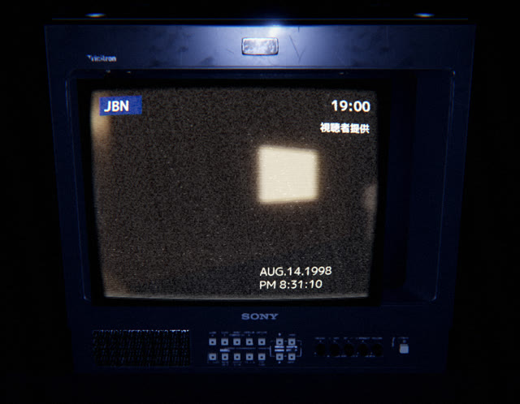
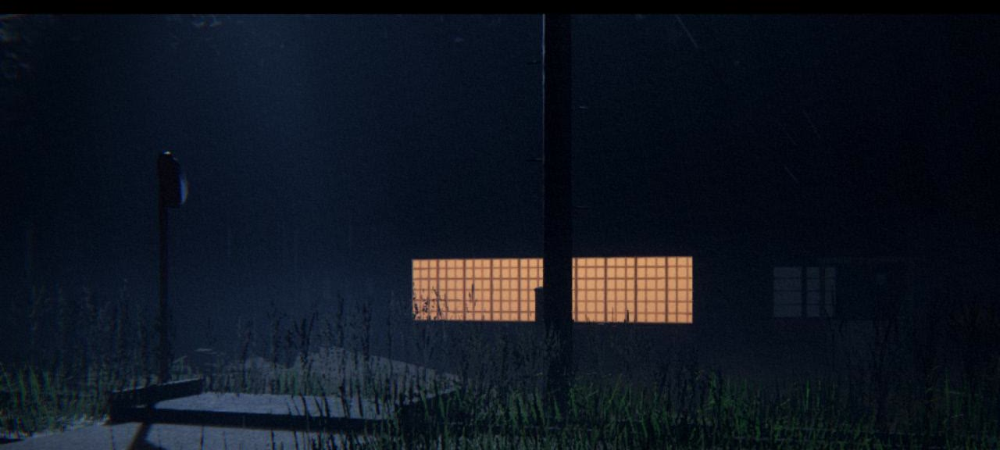
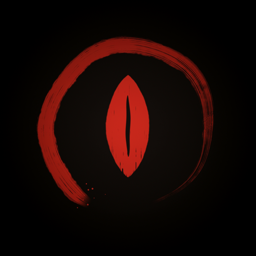

La historia
Hace un año, la noche del tifón, Michiko no volvió.
Eres Haruo Sakai, un agricultor viudo de Kiriyama-mura. En el pueblo lo llamaron kamikakushi: escondida por los dioses.
Ahora es la semana de Obon, cuando los muertos vuelven a casa. Las ranas del arrozal se callan de golpe. Hay huellas de botas junto al pozo. Una secta deja papeles en tu puerta. Y anoche, algo caminó sobre el techo.
«Si escuchas esto, Haruo, no abras. Aunque sea mi voz.»— Casete de Michiko, 1997

Tráiler
No mires la televisión demasiado tiempo.
Las señales
Todo tiene una explicación.
Casi todo.





El juego
Investiga de día. Sobrevive de noche.
Cuatro días, cuatro noches
Atiende la chacra, sigue las pistas, escucha los casetes de Michiko y las noticias. La noche solo avanza cuando duermes.
¿Quién toca la puerta?
Mira por la rendija. Habla. Decide si abrir. Algunas voces repiten frases que ya escuchaste.
Una cámara VHS-C
Visión nocturna, batería limitada… y cosas que solo aparecen a través de la cinta.
Japón rural, 1998
Arrozales con niebla, bosques de sugi, el altavoz del pueblo a las 17:00, la TV de tubo y la contestadora.
Voces en japonés
Narración y diálogos doblados en japonés, con subtítulos en español e inglés.
Dos finales
Uno es inevitable. El otro, solo si escuchaste todo lo que Michiko dejó… y nunca abriste.

Gratis · v0.6.0
Esta noche, no abras.
- Windows 10/11 · 64 bits
- GPU con Vulkan (GTX 1060 / RX 580 o superior)
- 8 GB de RAM
- Español · English · 日本語 (voces)
- Teclado y mouse · mando
Descomprime y ejecuta TheOnes.exe. Windows puede mostrar un aviso de SmartScreen porque el juego no está firmado: «Más información» → «Ejecutar de todas formas». Se recomienda jugar con auriculares, de noche.